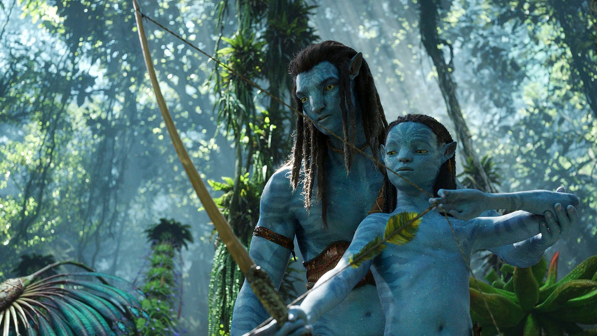

Regizor: James Cameron
Duration-3 h 12 min

Avatar: The Way of Water is a 2022 American epic science fiction film directed and produced by James Cameron, who co-edited the film and co-wrote the screenplay with Rick Jaffa and Amanda Silver from a story the trio wrote with Josh Friedman and Shane Salerno. Distributed by 20th Century Studios, it is the sequel to Avatar (2009) and the second installment in the Avatar film series. Cast members Sam Worthington, Zoe Saldaña, Stephen Lang, Joel David Moore, CCH Pounder, Giovanni Ribisi, Dileep Rao, and Matt Gerald reprise their roles from the original film, with Sigourney Weaver returning in an additional role. New cast members include Kate Winslet, Cliff Curtis, Edie Falco, and Jemaine Clement. In the film, Na'vi Jake Sully (Worthington) and his family, under renewed human threat, seek refuge with the Metkayina clan of Pandora. Cameron stated in 2006 that he would like to make sequels to Avatar if it was successful, and he announced the first two sequels in 2010, following the widespread success of the first film, with the first sequel aiming for a 2014 release. However, the addition of two more sequels, for a total of five Avatar films, and the necessity to develop new technology in order to film performance capture scenes underwater, a feat never accomplished before, led to significant delays to allow the crew more time to work on the writing, preproduction, and visual effects. The filming process, which occurred simultaneously with a currently untitled third film, began in Manhattan Beach, California, on August 15, 2017. The filming location moved to Wellington, New Zealand, on September 25, 2017, and concluded in late September 2020 after three years of shooting. With an estimated budget of $350–460 million, it is one of the most expensive films ever made. Following repeated delays in the expected release schedule, Avatar: The Way of Water premiered in London on December 6, 2022, and was theatrically released in the United States on December 16, 2022. The film received generally positive reviews from critics, who praised the film for its visual effects and technical achievements but criticized the plot and lengthy runtime. The film has grossed over $1.755 billion worldwide, becoming the highest-grossing film of 2022 and the seventh-highest-grossing film of all time. It was the sixth-fastest film to cross the billion-dollar mark, doing so in 14 days, and the fourth film to cross the $1 billion mark since the start of the COVID-19 pandemic. The film also received numerous accolades, including nominations for Best Motion Picture – Drama and Best Director at the 80th Golden Globe Awards.
Plot:
Fourteen years after the Na'vi repelled the human invasion of Pandora by the Resources Development Administration (RDA),[a] Jake Sully lives as chief of the Omaticaya clan, and raises a family with Neytiri, which includes sons Neteyam and Lo'ak, daughter Tuk, and an adopted daughter Kiri (born from Grace Augustine's inert avatar). His children are inseparable from a human boy named Spider, the son of Colonel Miles Quaritch, who was born on Pandora and was unable to be transported to Earth in cryostasis due to his infancy. To the Na'vi's dismay, the RDA returns to prepare Pandora for human colonization, as Earth is dying. Among the new arrivals are 'recombinants'—Na'vi avatars implanted with the minds and memories of deceased human soldiers—with Quaritch's recombinant serving as their leader. One year later, Jake is leading a guerilla campaign against the RDA. During a counterinsurgency mission, Quaritch and his subordinates capture Jake's children. Jake and Neytiri arrive and free them, but Spider remains captured by Quaritch, who recognizes him as his son. After the RDA fails to coerce Spider to divulge information through torture, Quaritch decides to spend time with him in order to draw Spider on his side, and in turn, Spider teaches Quaritch about Na'vi culture and language. Aware of the danger Spider's knowledge of his whereabouts poses to their safety, Jake and his family exile themselves from the Omaticaya and retreat to the Metkayina reef people clan at Pandora's eastern seaboard. Although Jake and his family are given refuge, they are viewed with antipathy from some of the tribesmen due to their human heritage. Nevertheless, the family learns the ways of the reef people, Kiri develops a spiritual bond with the sea and its creatures, and Lo'ak befriends Tsireya, the daughter of clan chief Tonowari and his wife Ronal. Lo'ak gets into a fight with Tsireya's brother Aonung. When he returns to apologize at Jake's insistence, Aonung and his friends entice him to a trip into the territory of a dangerous sea predator and leave him stranded. Lo'ak is saved and befriended by Payakan, a Tulkun—an intelligent and pacifistic cetacean species whom the Metkayina consider their spiritual family. Upon his return, Lo'ak wins Aonung's friendship by taking the blame for the trip, but is told that Payakan is an outcast among his species. On a trip to the Metkayina's Spirit Tree, which is underwater, Kiri links with it and meets her mother, whose consciousness lives within the planet due to her dying as she was connected. However, their meeting is cut short when Kiri suffers a seizure and falls unconscious. Jake summons Norm Spellman and Max Patel for help using their modern medical equipment, who diagnose Kiri with epilepsy and warn that she cannot risk connecting to the Spirit Tree again. Although Kiri is saved by the intervention of Ronal, Quaritch is able to track the aircraft used by Spellman and Patel to the archipelago where the reef people live. Bringing Spider with him, he commandeers a whaling vessel which is hunting Tulkuns to harvest their brain enzymes for anti-aging remedies called amrita. Quaritch and his subordinates travel throughout the archipelago, brutally interrogating the indigenous tribes about Jake's location; when this proves fruitless, he orders the whaling crew to kill Tulkuns near the villages in order to draw Jake out, knowing that it will enrage the tribes. Lo'ak mentally links with Payakan and learns that the Tulkun was cast out because he went against the pacifist ways of his species and attacked the whalers who killed his mother, resulting in the deaths of many Tulkun and Na'vi. When the Metkayina learn of the Tulkun killings, Lo'ak takes off to warn Payakan, followed by his siblings, Tsireya, Aonung, and Rotxo. They find Payakan being chased by the whalers, and Lo'ak, Tsireya, and Tuk are captured by Quaritch. With their children in danger, Jake, Neytiri, and the Metkayina set out to confront the humans. Quaritch forces Jake to surrender, but upon seeing Lo'ak imperiled, Payakan attacks the whalers, triggering a fight that kills most of the crew and cripples the vessel. Neteyam rescues Lo'ak, Tsireya, and Spider, but is shot by Quaritch's men and succumbs to his wounds shortly after. Jake faces Quaritch, who uses Kiri as a hostage. When Neytiri does the same with Spider, Quaritch at first denies his relationship with him, but desists when Neytiri cuts Spider across the chest before raising her knife to kill him. Jake, Quaritch, Neytiri, and Tuk end up trapped inside the sinking vessel. Jake strangles Quaritch into unconsciousness and is rescued by Lo'ak and Payakan, while Kiri summons sea creatures to help her save Neytiri and Tuk. Spider rescues Quaritch, but refuses to go with him and rejoins Jake's family. After Neteyam's funeral, Jake informs Tonowari and Ronal of his decision to leave the Metkayina. Tonowari, however, respectfully identifies him as part of the clan and welcomes his family to stay. Jake and his family accept and forge a new life at sea, with Jake vowing to resume his campaign against the human invaders.
About the characters:
Jake Sully , a former human who fell in love with Neytiri and befriended the Na'vi after becoming a member of the Avatar Program, eventually taking their side in their conflict with humans and leading them to victory. He left his human body to permanently become Na'vi and is now chief of the Omaticaya.
Neytiri , daughter of the previous clan chief, future Tsahìk of the clan, and Jake's mate.
Sigourney Weaver as Kiri te Suli Kireysi'ite, the daughter of Dr. Grace Augustine's Na'vi avatar who was adopted by Jake and Neytiri. Weaver originally appeared in the first film as Dr. Grace Augustine. Although both Weaver and Cameron confirmed that she would return in the sequels, she stated in 2014 that she would not play the same character. Like most of the cast, she learned free-diving for the film and filmed scenes underwater. Weaver also reprises her role as Dr. Grace Augustine, a human scientist who takes the side of the Na'vi and dies during the conflict. Her Na'vi avatar is revealed to have birthed Kiri despite her death. She appears in this film in a video recording and in a spiritual vision where she meets with Kiri.
Colonel Miles Quaritch , a human military officer who led the paramilitary security division of the RDA in their conflict with the Na'vi.[18] After being killed by Neytiri in 2154, he is revived as a recombinant and seeks revenge against Jake and his family. Cameron stated in 2010 that Lang would return in the first three sequels, stating, "I'm not going to say exactly how we're bringing him back, but it's a science fiction story, after all. His character will evolve into really unexpected places across the arc of our new three-film saga." He later stated that Quaritch would act as the main antagonist once again, in all four sequels. Lang also reprises his role as the human version of Quaritch in a video recording made for his recombinant self.
Ronal, a free diver of the Metkayina and Tonowari's wife, who is pregnant. Winslet called Ronal "a pivotal character in the ongoing story" but also "relatively small comparative to the lengthy shoot" since shooting all her scenes only took a month. It marks her first time working with performance capture, and motion capture altogether. She, like most of the cast, also had to learn free diving for the film; while filming an underwater scene, she held her breath for over seven minutes, a new record for any film scene shot underwater.